|
|
|
|
|Instituto Tecnológico de Costa Rica|Escuela de Matemática| M. Sc. Geovanni Figueroa M. |
|
|
Factor integranteLas ecuaciones diferenciales exactas son relativamente inestables, por decirlo de alguna manera, ya que la exactitud exige un balance en la forma de la ecuación diferemcial, balance que se destruye bajo pequeñas modificaciones, por ejemplo, la siguiente ecuación diferencial
es exacta, pues
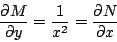
Sin embargo, al multiplicarla por el factor 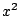, la ecuación /refedo2:eq1 se transforma en
la cual no es exacta. Observación: podemos invertir la situación, al multiplicar la ecuación 1.4 por el factor 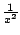 obtenemos la ecuación diferencial 1.3, la cual es exacta. En tales circunstancias, es razonable preguntarse: ¿ hasta qué punto se puede convertir en exacta una ecuación diferencial que no lo es ?. En otras palabras, si la ecuación
no es exacta, ¿ bajo qué condiciones se puede encontrar una función 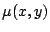 con la propiedad de que
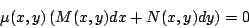
sea exacta ?. Cualquier función que actúe de este modo se llama factor integrante. Así, es un factor integrante de la ecuación 1.4.
Ejemplo:
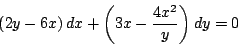
pues al multiplicarla por obtenemos la ecuación
La cual es exacta.
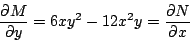
El lector puede comprobar que la solución de ésta ecuación es 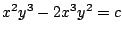. De inmediato, la pregunta que surge es ¿ Cómo se encuentra un factor integrante ?, vamos a tratar de explorar un poco esta cuestióón. Si es un factor integrante de la ecuacióón 1.5 entonces por el criterio de exactitud tenemos que
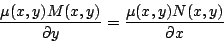
Aplicando la regla del producto, esto se reduce a la ecuación
Pero despejar de la ecuación 1.6, es por lo general más difícil que resolver la ecuación original 1.5. Sin embargo, existen algunas excepciones importantes que podemos estudiar.
Suponga que la ecuación 1.5 tiene un factor
integrante que depende solamente de
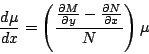
Separando variables obtenemos
Integrando a ambos lados de la expresión 1.7 podemos calcular fácilmente el factor integrante.
De manera análoga, si la ecuación 1.5 tiene un
factor integrante que depende solamente de
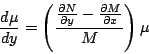
Separando variables obtenemos
Integrando a ambos lados de la expresióón 1.8 podemos calcular fácilmente el factor integrante. Este resultado se enuncia en el siguiente teorema.
Observación: al multiplicar por el factor integrante , podemos perder o ganar soluciones. Es posible enunciar resultados similares al anterior para otros tipos de factores integrantes, el siguiente ejemplo muestra una situación de este tipo.
Ejemplo: Resolver la ecuación diferencial
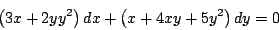
si su factor integrante es de la forma 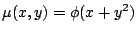.
Haga 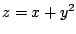 y calculemos las derivadas parciales de respecto a
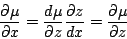
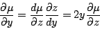
Sustituyendo en la ecuación 1.6 obtenemos que
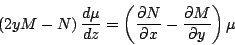
Separando variables
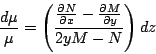
Como 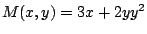 y 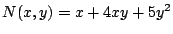, resulta que
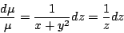
Integrando obtenemos que 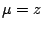. Es decir, que el factor integrante es 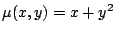. Al multiplicar por este factor tenemos que la ecuación original se convierte en
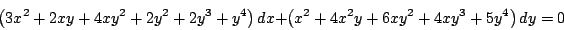
la cual es exacta y tiene como solución
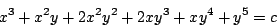
Ejemplo:
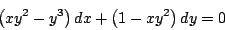
Primero calculamos
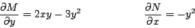
Ahora intentamos hallar un factor integrante que dependa únicamente de
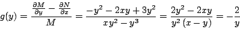
Con lo cual el factor integrante esta dado por
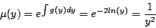
Y al multiplicar la ecuación diferencial por este factor integrante obtenemos la ecuación
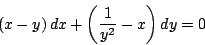
la cual es exacta y tiene como solución
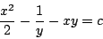
Ejemplo
Halle los valores de
Si
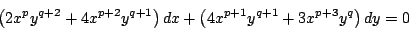
es una ecuación exacta, es decir, debe cumplir que
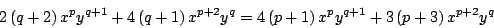
igualando coeficientes obtenemos el siguiente sistema de ecuaciones
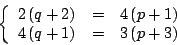
el cual es equivalente a
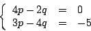
y tiene como solución 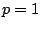 y 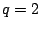, con lo cual el factor integrante es 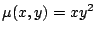 y la solución de la ecuación diferencial esta dada por
Subsecciones
|